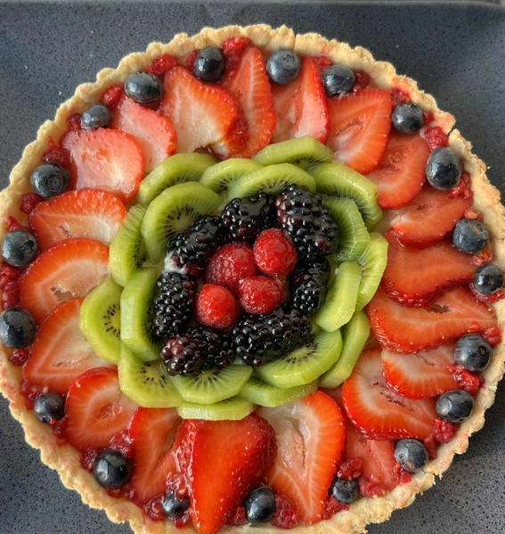

Summer Fruit Pizza
Description
A colorful, refreshing dessert perfect for sunny days! This fruit pizza combines a buttery shortbread crust with a creamy vanilla filling and vibrant layers of fresh strawberries, kiwis, blueberries, blackberries, and raspberries. Beautiful to look at, even better to eat!
Ingredients
Shortbread Crust
- 1 cup (2 sticks) unsalted butter, softened
- ½ cup powdered sugar
- 1 tsp vanilla extract
- 2 cups all-purpose flour
- ¼ tsp salt
Cream Filling
- 8 oz mascarpone cheese (or cream cheese), softened
- ½ cup powdered sugar
- 1 tsp vanilla extract
- 2 tbsp heavy cream or milk (optional, for spreading)
Fruit Topping
- 5–6 strawberries, thinly sliced
- 2–3 kiwis, peeled and sliced
- ¼ cup blueberries
- ¼ cup blackberries
- ¼ cup raspberries
Optional Glaze
- 2 tbsp apricot jam
- 1 tsp water
Instructions
1. Make the Crust
- Preheat oven to 350°F (175°C).
- In a large bowl, cream together butter and powdered sugar until fluffy.
- Stir in vanilla, then gradually mix in flour and salt until a soft dough forms.
- Press dough into a tart pan or pizza pan (lined with parchment if needed), spreading evenly to edges.
- Prick crust with a fork and bake for 15–18 minutes, or until lightly golden. Let cool completely.
2. Prepare the Filling
- In a bowl, whip together mascarpone (or cream cheese), powdered sugar, and vanilla until smooth.
- Add heavy cream if needed to thin slightly. Spread evenly over the cooled crust.
3. Decorate with Fruit
- Arrange sliced strawberries around the outer edge in a fan shape.
- Add a ring of kiwi slices just inside the strawberries.
- Place blackberries and raspberries in the center.
- Fill gaps with blueberries for pops of color.
4. Optional Glaze
- Warm apricot jam with water until thin and glossy. Brush gently over fruit for a shiny finish.
To Serve
Chill for 30–60 minutes before slicing. Serve cold and enjoy your sweet slice of summer!